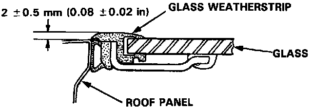
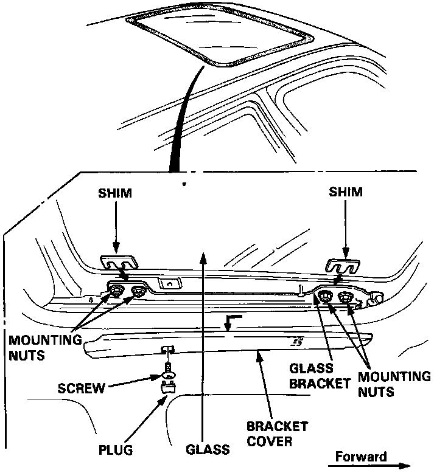

Glass Height Adjustment
Glass Height Adjustment
The roof panel should be even with the glass weatherstrip, to within 2 ± 0.5 mm (0.08 ± 0.02 in.) all the way around.

If not, open the glass fully, and:
1. Pry plug out of the bracket cover, remove the screw, then slide the bracket cover off to the rear.
2. Loosen the mounting nuts and install the shims between the glass and glass bracket as shown.
Shim thickness: Max. 2 mm (0.08 in)
3. Repeat on opposite side if necessary.